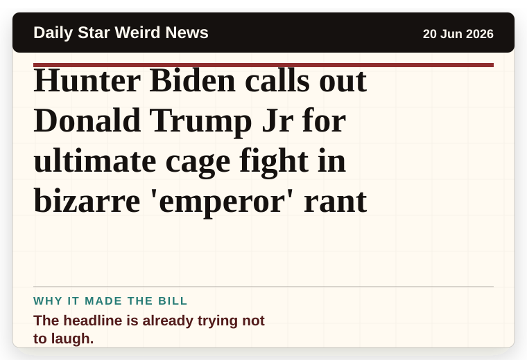
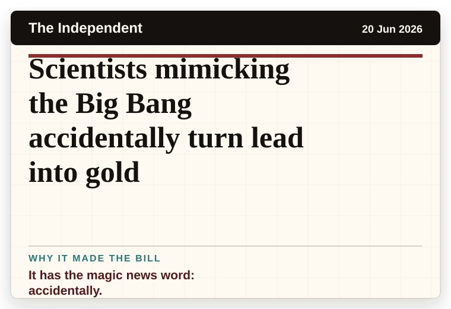
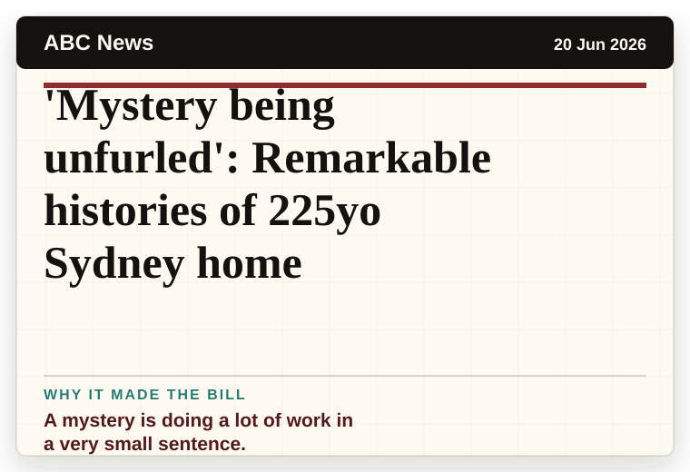
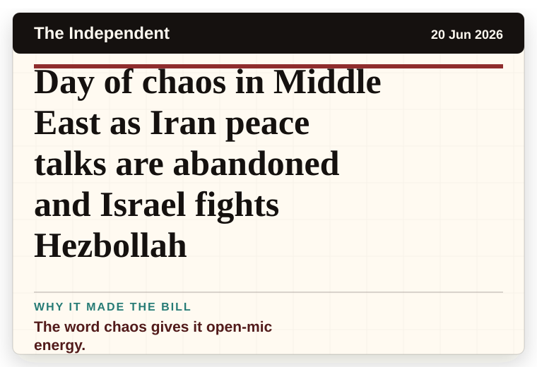
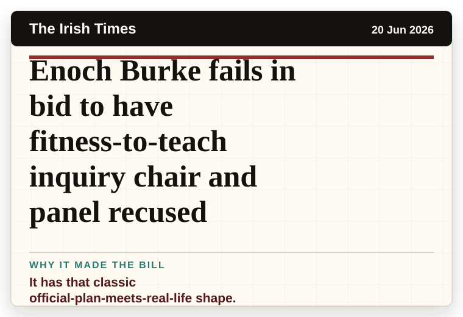
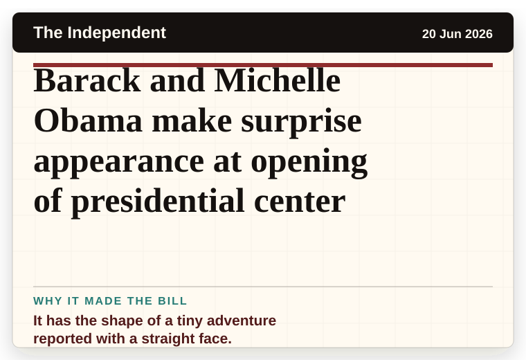
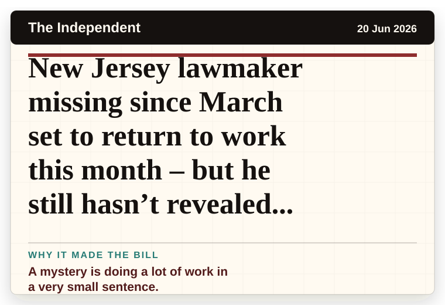

NT News
Australia
Why just three kids are costing SA taxpayers $3.8m a year
It reads like the setup to a very dry question.
The latest daily picks, linked back to the original sources. Search the room, pick a source, or follow a headline out to the full story.
Record updated: 20 Jun 2026, 08:31 AM AEST
Showing 20 headline candidates from the refresh run completed on 20 Jun 2026, 08:31 AM AEST.
It reads like the setup to a very dry question.

The scale is doing deadpan comedy.

A very ordinary object has wandered into serious news.

It has the shape of a tiny adventure reported with a straight face.

The headline is already trying not to laugh.

The headline is already trying not to laugh.

A wonderfully specific detail has taken centre stage.

A mystery is doing a lot of work in a very small sentence.

A very ordinary object has wandered into serious news.

A wonderfully specific detail has taken centre stage.

A wonderfully specific detail has taken centre stage.

A wonderfully specific detail has taken centre stage.

A mystery is doing a lot of work in a very small sentence.

It has the magic news word: accidentally.

A mystery is doing a lot of work in a very small sentence.

The word chaos gives it open-mic energy.

It has the shape of a tiny adventure reported with a straight face.

It has that classic official-plan-meets-real-life shape.

It has the shape of a tiny adventure reported with a straight face.

A mystery is doing a lot of work in a very small sentence.